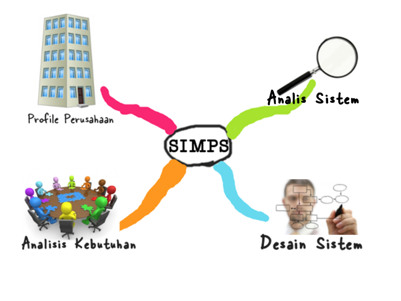
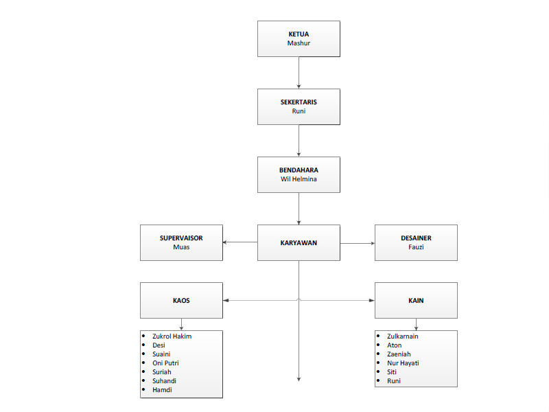
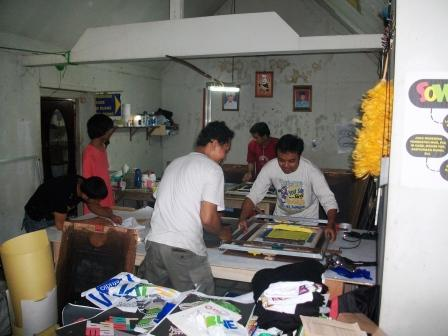
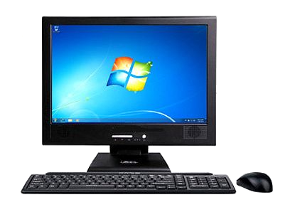

- Ahmad Muhar Dian L (1210520098)
- Muhamad Azwar (1210520106)
- Wisnu Maulana (1210520076)
- L. Purwanda Bagus Wilman (1210520099)
- Limarsi (1210520145)

Latar Belakang
Perusahaan Konveksi Sablon 2 Putra masih Menggunakan Buku untuk Mencatat Pesanan Konsumen
sistem informasi manajemen
Pemesanan*
Tujuan
- Untuk memudahkan proses pengolahan data keuangan dan pesanan di konveksi
sablon dua putra
Manfaat
- Meningkatkan efisiensi dalam pengolahan
data dan keuangan.
Nama Perusahaan: Konveksi Sablon 2 Putra
Lokasi:
Desa Bengkel, Lombok Barat


Sejarah Perusahaan
Berawal Dari Tragedi Bom Bali 1
Konveksi Sablon 2 Putra

Analis Sistem
Metode pengumpulan data
Observasi
Wawancara
Dokumentasi
Identifikasi Masalah
masalah mulai muncul saat banyak pesanan
Penyebab Masalah
Data yang terlalu banyak
Solusi
Menggunakan Sistem Informasi Manajemen Pemesanan Sablon
Kebutuhan Perangkat Lunak
Kebutuhan Perangkat Keras

prosesor: 1 GHz 32-bit
RAM: 1GB
Hardisk: Minimal 16 GB
 Kebutuhan Personil
Kebutuhan Personil
Kebutuhan Fungsional petugas
*Fasilitas untuk mengganti password
*Fasilitas untuk melihat data konsumen
*Fasilitas untuk membuat kuitansi
*Fasilitas untuk membuat laporan
Kebutuhan Konsumen
*Dapat memesan lebih dari satu pesanan
*Dapat mengetahui status pesanan melalui petugas
*Dapat melakukan pembayaran melalui petugas
Kebutuhan Pemilik
Dapat menerima laporan setiap bulan
Kebutuhan Desainer
Dapat melihat informasi pemesanan konsumen
Petugas
Nama Arus: Login
Bentuk Data : Form yang disi oleh petugas
Arus Data : Data mengalir dari satuan luar petugas menuju ke sistem
Penjelasan : Arus ini berupa form yang diisi oleh petugas setiap login/masuk ke sistem
periode : harian
volume : 5 kali/hari
Struktur Data : Username,password
Petugas
Nama Arus: Identitas Konsumen
Bentuk Data : Berupa Form yang disi oleh petugas
Arus Data : Data mengalir dari satuan luar petugas menuju ke aktivitas mengisi form pesanan
Penjelasan : Arus ini berupa form yang diisi oleh petugas setiap ada pemesanan baru
periode : harian
volume : 3 kali/hari
Struktur Data : Id_konsumen, nama, alamat, no_telepon
Petugas
Nama Arus: Data Pesanan
Bentuk Data : Berupa Form yang disi oleh petugas
Arus Data : Data mengalir dari satuan luar petugas menuju ke aktivitas mengisi form pesanan
Penjelasan : Arus ini berupa form yang diisi oleh petugas setiap ada pemesanan baru
periode : harian
volume : 3 kali/hari
Struktur Data : Kd_pesanan, jenis, ukuran, gambar,deskripsi, tanggal, jumlah,harga_satuan,status
Petugas
Nama Arus: Data Petugas
Bentuk Data : Berupa Form yang disi oleh petugas
Arus Data : Data mengalir dari satuan luar petugas menuju ke aktivitas mengisi form pesanan
Penjelasan Arus ini berupa form yang diisi oleh petugas setiap ada pemesanan baru
periode : harian
volume : 3 kali/hari
Struktur Data : Kd_pesanan, jenis, ukuran, gambar,deskripsi, tanggal, jumlah,harga_satuan,status
Petugas
Nama Arus: Status Pesanan
Bentuk Data : Berupa Form yang disi oleh petugas
Arus Data : Data mengalir dari satuan luar petugas menuju ke aktivitas mengerjakan pesanan
Penjelasan : Arus ini berupa form yang diisi oleh petugas setiap pesanan sudah selesai dikerjakan atau sedang dikerjakan atau belum dikerjakan
periode : harian
volume : 3 kali/hari
Struktur Data : Kd_pesanan, status_pesanan
Petugas
Nama Arus: Data Pesanan
Bentuk Data : Berupa form informasi
Arus Data : Data mengalir dari proses Mengerjakan Pesanan menuju ke satuan luar Desainer
Penjelasan : Arus ini berupa form informasi yang dikirim oleh petugas setalah mengisi data pesanan ke desainer
periode : harian
volume : 3 kali/hari
Struktur Data : Kd_pesanan, Jenis, ukuran, Deskripsi, gambar
Petugas
Nama Arus: Kode Pesanan
Bentuk Data : Berupa Form yang disi oleh petugas
Arus Data : Data mengalir dari satuan luar petugas menuju ke aktivitas memeriksa status pesanan
Penjelasan : Arus ini berupa form yang diisi oleh petugas setiap ada konsumen yang ingin memeriksa status pesanannya.
periode : harian
volume : 5 kali/hari
Struktur Data : Kd_pesanan, stautus_pesanan
Desainer
Nama Arus: Data Pesanan
Bentuk Data : Berupa form informasi
Arus Data : Data mengalir dari proses Mengerjakan Pesanan menuju ke satuan luar Desainer
Penjelasan : Arus ini berupa form informasi yang dikirim oleh petugas setalah mengisi data pesanan ke desainer.
periode : harian
volume : 3 kali/hari
Struktur Data : Kd_pesanan, Jenis, ukuran, Deskripsi, gambar
Desainer
Nama Arus: Desain Pesanan
Bentuk Data : Dokumen
Arus Data : Data mengalir dari satuan luar Desainer menuju ke aktivitas Mengerjakan Pesanan
Penjelasan : Arus ini berupa dokumen yang dicetak oleh desainer untuk mengerjakan pesanan.
periode : harian
volume : 3 kali/hari
Struktur Data : gambar
Konsumen
Nama Arus: Kuitansi
Bentuk Data : Dokumen
Arus Data : Data mengalir dari aktivitas melakukan pembayaran menuju ke satuan luar Konsumen
Penjelasan : Arus ini berupa dokumen (kuitansi) yang dicetak oleh petugas yang diserahkan ke konsumen sebagai tanda pembayaran.
periode : harian
volume : 3 kali/hari
Struktur Data : No_kuitansi, Nama_konsumen, jenis_pesanan, ukuran, jumlah, harga_satuan, total, bayar, kembalian, nama_petugas
Konsumen
Nama Arus: Status Pesanan
Bentuk Data : Informasi
Arus Data : Data mengalir dari aktivitas memeriksa status pesanan menuju ke satuan luar konsumen
Penjelasan : Arus ini berupa informasi status pesanan dari petugas.
periode : harian
volume : 3 kali/hari
Struktur Data : Status_pesanan
Pemilik
Nama Arus: Laporan
Bentuk Data : Dokumen
Arus Data : Data mengalir dari proses membuat laporan menuju ke satuan luar pemilik
Penjelasan : Arus ini berupa dokumen yang dicetak oleh petugas setiap bulan.
periode : Bulanan
volume : 1
Struktur Data : No_kuitansi, nama_konsumen, jenis_pesanan, harga_satuan, jumlah, total, bayar, kembalian, total_pemasukan
Bentuk 3 NF

Rancangan Interface
Input dan Output
Sistem Informasi Manajemen Pemesanan Sablon